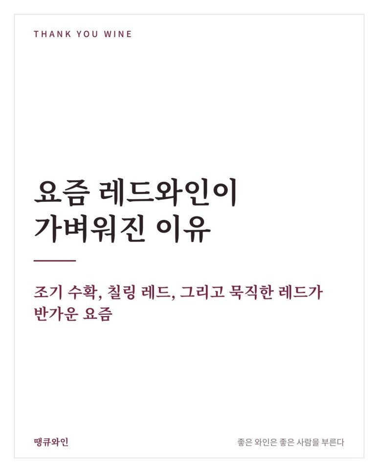
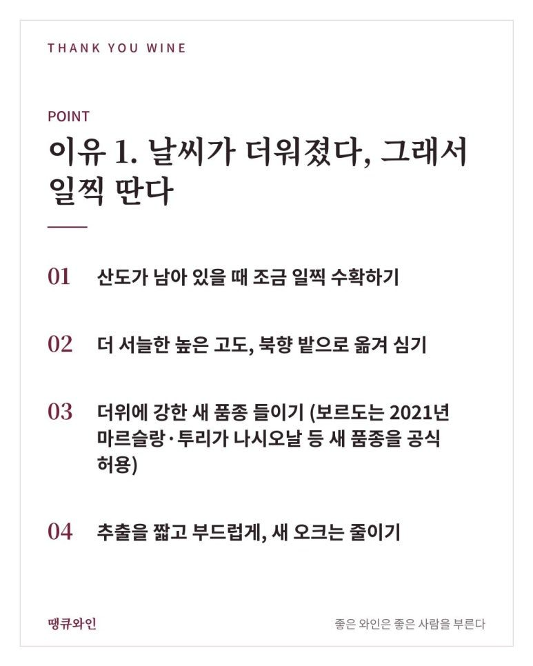
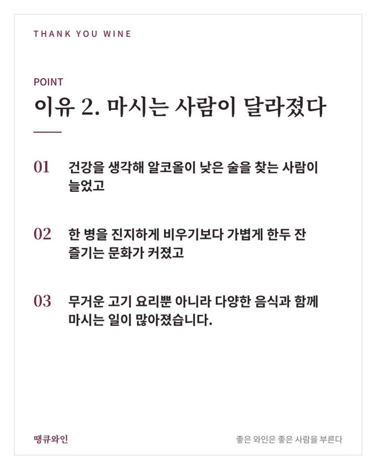
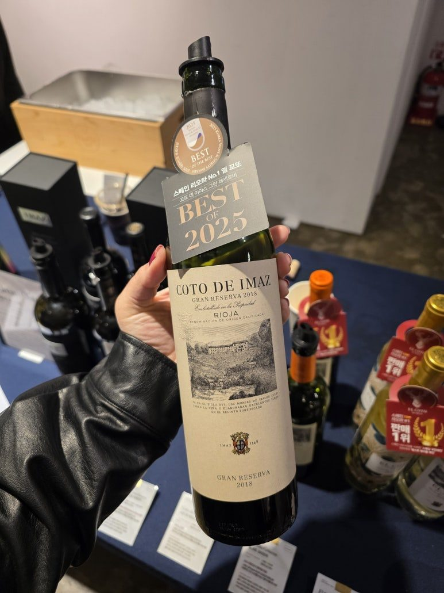
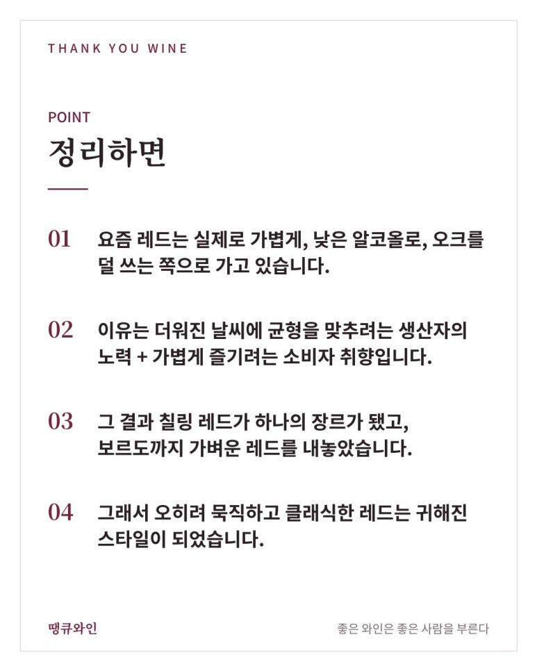

요즘 레드와인이 가벼워진 이유
조기 수확, 칠링 레드, 그리고 묵직한 레드가 반가운 요즘
요즘 레드와인을 열어 보면 예전과 느낌이 조금 다릅니다.
요즘 레드와인을 열어 보면 예전과 느낌이 조금 다릅니다.
색은 한결 맑고, 입에 닿는 무게는 가볍고, 혀를 조이는 떫은맛(타닌)은 부드러워졌습니다.
10년 전 "레드와인은 묵직해야 제맛"이라던 분위기를 기억하시는 분이라면 더 크게 느끼실 거예요.
이건 기분 탓이 아니라, 세계 와인 산지에서 실제로 일어나고 있는 흐름입니다.
오늘은 왜 레드와인이 점점 여리해지고 있는지, 그리고 그 속에서 묵직한 레드는 어떤 의미가 되었는지 정리해 봤습니다.

한눈에 보는 요즘 레드와인 흐름
- 알코올
- 14.5~15%대가 흔하던 때에서 12~13%대 레드가 늘어나는 중
- 타닌·오크
- 새 오크통 맛을 줄이고, 과일과 산도를 살리는 쪽으로
- 마시는 법
- 살짝 차갑게 마시는 '칠링 레드'가 하나의 장르로
- 이유
- 기후변화 대응 + 마시는 사람의 취향 변화, 두 가지가 겹침
1990~2000년대, '크고 진한 레드'의 시대
지금의 흐름을 이해하려면 먼저 그 반대편을 봐야 합니다.
1990~2000년대에는 잘 익은 포도로 진하게 추출하고, 새 오크통에서 오래 숙성한 크고 진한 레드가 높은 점수를 받던 시기였습니다.
호주 쉬라즈는 알코올 15.5%도 드물지 않았고, 와이너리들이 새 오크를 몇 퍼센트 썼는지 자랑스럽게 적어 두던 때였죠.
그런데 이런 와인이 너무 많아지자 반작용이 생겼습니다.
묵직한 진판델을 몇 잔 마시고 나면, 사람들은 보졸레를 찾게 된다.
남아공 와인 매거진 Winemag의 칼럼(2023)에서 나온 표현입니다.
2011년 미국 캘리포니아에서는 아예 균형 잡힌 와인을 추구하자는 생산자 모임 'In Pursuit of Balance'가 만들어지기도 했습니다.
'소리 지르지 않는 나파 와인'을 내세운 텍스트북 까베르네 소비뇽도 이런 흐름과 맞닿아 있는 와인이에요.
이유 1. 날씨가 더워졌다, 그래서 일찍 딴다
재미있는 건, 기후가 더워지면 원래 와인은 더 진하고 더 독해지는 게 자연스럽다는 점입니다.
포도가 더 익으면 당도가 올라가고, 당이 많을수록 알코올도 높아지니까요.
실제로 부르고뉴 본(Beaune) 지역의 664년치(1354년~) 수확 기록을 분석한 연구(학술지 Climate of the Past, 2019)를 보면, 지금은 평균보다 약 13일 일찍 포도를 따고 있고 그 변화의 대부분이 1988년 이후에 일어났습니다.
그래서 생산자들은 일부러 방향을 틀고 있습니다.
- 산도가 남아 있을 때 조금 일찍 수확하기
- 더 서늘한 높은 고도, 북향 밭으로 옮겨 심기
- 더위에 강한 새 품종 들이기 (보르도는 2021년 마르슬랑·투리가 나시오날 등 새 품종을 공식 허용)
- 추출을 짧고 부드럽게, 새 오크는 줄이기
즉 요즘의 가벼운 레드는 더워진 날씨를 거슬러 일부러 만든 균형에 가깝습니다.

이유 2. 마시는 사람이 달라졌다
두 번째 이유는 우리, 마시는 쪽에 있습니다.
- 건강을 생각해 알코올이 낮은 술을 찾는 사람이 늘었고
- 한 병을 진지하게 비우기보다 가볍게 한두 잔 즐기는 문화가 커졌고
- 무거운 고기 요리뿐 아니라 다양한 음식과 함께 마시는 일이 많아졌습니다.

알코올 15%와 12%는 숫자로는 3% 차이지만, 실제 알코올 양으로는 약 20%가 줄어든 셈입니다. 한두 잔 마신 다음 날 몸이 느끼는 차이가 꽤 크죠.
세계적으로 레드와인 소비가 줄고 화이트·로제·가벼운 레드 쪽으로 옮겨 가는 흐름도 같은 맥락입니다.
칠링 레드, 아예 장르가 되다
이 흐름이 가장 잘 보이는 곳이 바로 칠링 레드(Chilled Red)입니다.
영국 드링크스 비즈니스 보도(2026년 7월)에 따르면, 올해 2~6월 사이 '칠링 레드' 검색이 크게 늘었고, 질문도 "레드를 차갑게 마셔도 되나?"에서 "어떤 레드가 차갑게 마시기 좋나?"로 바뀌었다고 합니다.
심지어 묵직한 레드의 대명사 같던 보르도도 움직였습니다.
2025년 빈티지부터 '클라레(Claret)'라는 옛 이름을 되살려, 침용을 2~4일로 짧게 하고 오크를 쓰지 않은 가볍고 차갑게 마시는 레드를 새 카테고리로 내놓았습니다. 얼음을 넣어 마셔도 된다고 소개할 정도예요.
칠링 레드는 냉장고에서 바로 꺼낸 온도가 아니라 10~14도 정도가 좋습니다.
냉장고에 30분~1시간 넣었다 꺼내면 딱 그 정도가 됩니다.
칠링에 잘 어울리는 대표 품종은 가메(보졸레), 피노 누아, 그르나슈, 프라파토, 츠바이겔트처럼 타닌이 적고 산도가 살아 있는 품종들입니다.
땡큐와인에서 소개했던 와인 중에는 조나단 세갱의 부르고뉴 피노 누아, 산지오베제와 콜로리노를 반반 섞은 일 코르노 미나에모로가 살짝 차갑게 마셔도 매력이 사는 쪽이에요.
→ 오래된 포도나무가 만드는 특별한 차이, 도멘 조나단 세갱 꼬뜨 드 쇼슈아 피노누아 VV 2024
→ 오래된 포도나무가 만드는 특별한 차이, 도멘 조나단 세갱 꼬뜨 드 쇼슈아 피노누아 VV 2024
가벼운 게 무조건 좋은 걸까?
여기서 한 가지는 짚고 넘어가고 싶습니다.
가볍다고 더 좋은 와인은 아닙니다.
너무 일찍 따서 덜 익은 풋내가 나거나, 맛이 비어 버린 와인도 분명 있습니다. 앞서 말한 Winemag 칼럼도 "너무 마른 와인은 너무 무거운 와인만큼 문제"라고 말합니다.
결국 중요한 건 무게가 아니라 균형, 그리고 그날의 음식과 기분에 맞는 선택입니다.
그래서 요즘, 묵직한 레드가 더 반갑습니다
땡큐와인을 하면서 요즘 들어오는 레드들을 맛보면, 확실히 달큰하고 여리한 스타일이 많아졌다는 걸 느낍니다.
그래서인지 오히려 타닌이 단단하게 받쳐 주는 레드를 만나면 반가운 마음이 듭니다.
얼마 전 소개한 스페인 리오하의 꼬또 데 이마스 그란 레세르바가 그랬습니다.
오크통과 병에서 오래 숙성을 거친 그란 레세르바답게, 시간이 만든 부드러움 속에 단단한 뼈대가 살아 있는 와인이었어요.
여리한 레드가 많아진 지금, 이런 클래식한 스타일은 오히려 하나의 개성이 됐습니다.

진하고 부드러운 스타일을 좋아하신다면 나파 밸리의 대표 레드 케이머스도 함께 읽어 보세요.
정리하면
- 요즘 레드는 실제로 가볍게, 낮은 알코올로, 오크를 덜 쓰는 쪽으로 가고 있습니다.
- 이유는 더워진 날씨에 균형을 맞추려는 생산자의 노력 + 가볍게 즐기려는 소비자 취향입니다.
- 그 결과 칠링 레드가 하나의 장르가 됐고, 보르도까지 가벼운 레드를 내놓았습니다.
- 그래서 오히려 묵직하고 클래식한 레드는 귀해진 스타일이 되었습니다.

가벼운 레드는 가볍게, 묵직한 레드는 천천히.
오늘 저녁엔 어떤 쪽이 당기시나요? 🍷
이 글은 땡큐와인 네이버 블로그에 먼저 올린 글이에요.